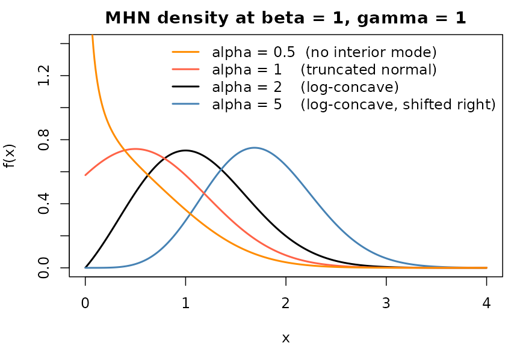

Scope
This vignette is the theoretical companion to Introduction to the
mhn Package. The Introduction shows what the four exported
functions (dmhn / pmhn / qmhn /
rmhn) and their moment helpers do; this note develops the
mathematical and algorithmic theory the package implements. We summarise
the Modified Half-Normal (MHN) family, the Fox–Wright \(\Psi\) function that appears in its
normalising constant, and the two sampling schemes the package draws on
— Sun, Kong & Pal (2023) and Gao & Wang (2025).
We deliberately keep the treatment compact. Full proofs and the finer
numerical considerations live in the original papers (see References).
Two implementation-relevant points — the typesetting errata in Sun et
al. (2023) and how the package handles them, and the benchmark-driven
rationale for the rmhn(method = "auto") crossovers — are
inserted in §4 and §7 where they are most relevant.
The MHN(\(\alpha\), \(\beta\), \(\gamma\)) family
The MHN distribution has support \((0, \infty)\) and density
\[f(x \mid \alpha, \beta, \gamma) = \frac{2 \beta^{\alpha/2} \, x^{\alpha-1} \, \exp(-\beta x^2 + \gamma x)} {\Psi[\alpha/2,\, \gamma/\sqrt{\beta}]}, \qquad x > 0,\]
with \(\alpha > 0\), \(\beta > 0\), \(\gamma \in \mathbb{R}\). The three parameters control three independent factors of the density kernel:
| Parameter | Factor it controls | Role |
|---|---|---|
| \(\alpha\) | \(x^{\alpha-1}\) | shape |
| \(\beta\) | \(\exp(-\beta x^2)\) | Gaussian tail |
| \(\gamma\) | \(\exp(\gamma x)\) | exponential tilt |
Three familiar distributions sit inside the family as exact special cases (Sun et al. 2023, Lemma 6):
| Constraint | Reduction |
|---|---|
| \(\gamma = 0\) | \(X^2 \sim \mathrm{Gamma}(\alpha/2,\, \beta)\) with rate \(\beta\), i.e. sqrt-Gamma |
| \(\alpha = 1\) | Truncated normal \(\mathrm{TN}(\gamma/(2\beta),\, 1/\sqrt{2\beta},\, 0,\, \infty)\) |
| \(\alpha = 1,\, \gamma = 0\) | Half-normal \(\lvert Z \rvert\) with \(Z \sim N(0,\, 1/(2\beta))\) |
rmhn() draws the truncated normal of the second row by
the method of Robert (1995).
There is also a degenerate boundary limit, not listed in the
table: as \(\beta \to 0^+\) with \(\gamma < 0\), the MHN density converges
to \(\mathrm{Gamma}(\alpha,\,
-\gamma)\) (Sun et al. 2023, remark after Lemma 6). The package
does not handle this limit specially because \(\beta > 0\) is required by the MHN
parameter space; for a Gamma draw with \(\beta
= 0\), use stats::rgamma directly.
For each of the three finite special cases in the table
above — \(\gamma = 0\), \(\alpha = 1\), and both together — the
exported functions work through the corresponding standard law — the
Gamma law of \(\beta X^2\) for \(\gamma = 0\), the normal law for \(\alpha = 1\) — bypassing the general
series-and-rejection machinery. dmhn, pmhn and
qmhn do so at those values exactly. A shape or a tilt
merely close to them is a different law: at \(\alpha = 1 + \delta\) the log density moves
by about \(\delta(\log(\sqrt{\beta}x) - E\log
U)\), \(U = \sqrt{\beta}X\),
which next to \(x = 10^{-300}\) is
about \(10^{-5}\) for \(\delta = 1.5 \times 10^{-8}\), so such a
triple takes the general route, which holds its accuracy up to the
special values. rmhn draws from the standard laws also
where \(|\alpha - 1|\) or the
scale-free tilt \(|\gamma|/\sqrt{\beta}\) is below
sqrt(.Machine$double.eps): the law drawn is then within a
total variation distance of about \(|\delta|\,E|\log U - E\log U|/2\) or \(|z|\,E|U - EU|/2\) of the one requested,
and of \(E|\delta L + zV|/2\), with
\(L\) and \(V\) those two centred terms, where both are
that small and the half-normal is drawn; this is below \(8.6 \times 10^{-9}\), and of Sun et al.’s
samplers only Algorithm 2, which the package does not implement (§5.3),
covers \(\alpha < 1\) with \(\gamma > 0\), a case
method = "sun" would otherwise meet next to \(\alpha = 1\) from below under a positive
tilt, and next to \(\gamma = 0\) from
above for any \(\alpha < 1\). The
one exception to the use of the standard laws is a zero or negligible
tilt at a very large shape. The Gamma law then has a relative width of
about \(\sqrt{2/\alpha}\), and the
rounding of \(\beta x^2\), or of R’s
rgamma, would move it by a visible part of that width. So
dmhn, pmhn and qmhn use it only
up to \(\alpha = 10^6\), beyond which
they treat \(\gamma = 0\) like any
other tilt (see the last paragraph before §4.1), and rmhn
only up to \(\alpha = 2^{60}\), beyond
which a rejection sampler placed at the mode takes over (§7).
x <- seq(0.001, 4, length.out = 400)
plot(x, dmhn(x, alpha = 2, beta = 1, gamma = 1), type = "l", lwd = 2,
ylim = c(0, 1.4), ylab = "f(x)",
main = "MHN density at beta = 1, gamma = 1")
lines(x, dmhn(x, alpha = 5, beta = 1, gamma = 1), lwd = 2, col = "steelblue")
lines(x, dmhn(x, alpha = 1, beta = 1, gamma = 1), lwd = 2, col = "tomato")
lines(x, dmhn(x, alpha = 0.5, beta = 1, gamma = 1), lwd = 2, col = "darkorange")
legend("topright", bty = "n", lwd = 2,
col = c("darkorange", "tomato", "black", "steelblue"),
legend = c("alpha = 0.5 (no interior mode)",
"alpha = 1 (truncated normal)",
"alpha = 2 (log-concave)",
"alpha = 5 (log-concave, shifted right)"))
MHN density as alpha crosses the log-concavity threshold; beta = 1, gamma = 1 fixed.
The figure illustrates the qualitative claims developed in the next section. The density is log-concave whenever \(\alpha \geq 1\) (Sun et al. 2023, Lemma 3a). For \(\alpha > 1\) it has a finite interior mode in closed form (Sun et al. 2023, Lemma 3b); the borderline case \(\alpha = 1\) reduces to the truncated normal, whose mode is \(\max(0,\, \gamma/(2\beta))\) — interior when \(\gamma > 0\), on the boundary \(x = 0\) otherwise. For \(\alpha < 1\) the density is typically monotone decreasing with a boundary singularity at \(x \to 0^+\). The one exception is \(\gamma > 0\) together with \(\alpha > 1 - \gamma^2/(8\beta)\), where the density is not unimodal: it diverges at \(x \to 0^+\), dips to a local minimum, rises to a single interior local maximum, and then decays (Sun et al. 2023, Lemma 3c, which states the condition with \(\geq\); at equality the two stationary points merge into an inflection point and the density is still decreasing). At \((\beta, \gamma) = (1, 1)\) this threshold is \(1 - 1/8 = 0.875\), so the orange (\(\alpha = 0.5\)) curve in the figure sits in the strict monotone-decreasing regime, with no interior local maximum.
Shape and moments
Three facts from Sun et al. (2023) drive everything the package does with shape, moments, and the mode.
Log-concavity is a function of \(\alpha\) alone. For \(\alpha \geq 1\) the density is log-concave irrespective of \(\beta\) and \(\gamma\) (Sun et al. 2023, Lemma 3a); for \(\alpha < 1\) it is not, because \((\log f)'' = (1 - \alpha)/x^2 - 2\beta\) is positive near \(0\). This threshold is what splits the Gao & Wang (2025) RTDR sampler into its log-axis and original-axis branches in §6 below. Gao & Wang put \(\alpha = 1\) itself on the original axis; the package moves it to the log axis (§6).
The mode has a closed form for \(\alpha > 1\) (Sun et al. 2023, Lemma 3b):
\[X_{\mathrm{mode}} = \frac{\gamma + \sqrt{\gamma^2 + 8\beta(\alpha - 1)}}{4\beta}.\]
For \(\alpha = 1\) the mode is \(\max(0,\, \gamma/(2\beta))\) (the
truncated-normal mode, Sun et al. 2023, Lemma 6b). For \(\gamma \leq 0\) this is the boundary point
\(0\). Sun et al. (2023, Lemma 3d)
state that no mode exists for \(\gamma <
0\) and \(\alpha \leq 1\); at
\(\alpha = 1\) the density is bounded
and decreases from its supremum at \(x =
0\), and mhn_mode() returns that point. For \(\alpha < 1\) the density is monotone
decreasing unless \(\gamma > 0\) and
\(\alpha > 1 - \gamma^2/(8\beta)\),
in which case it has a local minimum followed by an interior local
maximum (Sun et al. 2023, Lemma 3c). Sun et al. (2023, Lemma 3d) state
the decrease for \(\gamma < 0\) and
for \(\gamma > 0\) with \(\alpha < 1 - \gamma^2/(8\beta)\); at
\(\gamma = 0\) the derivative of \(\log f\), \(-(2\beta x^2 + 1 - \alpha)/x\), is
negative, and at \(\alpha = 1 -
\gamma^2/(8\beta)\) the two stationary points of Lemma 3c merge
into an inflection point. The helper mhn_mode() implements
this case split. It returns NA for \(\alpha < 1\) without an interior local
maximum, and the boundary mode 0 at \(\alpha =
1\) with \(\gamma \leq 0\).
Moments satisfy a two-term recurrence (Sun et al. 2023, Lemma 2b):
\[E(X^{k+2}) = \frac{\alpha + k}{2 \beta}\, E(X^{k}) + \frac{\gamma}{2 \beta}\, E(X^{k+1}).\]
Together with the closed-form ratio for \(E(X)\) in terms of \(\Psi\) (Sun et al. 2023, Lemma 2a), this
gives every higher moment in exact arithmetic. In double precision it
does not: central moments formed from raw ones cancel as soon as the
standard deviation is small next to the mean, and the ratio of two \(\Psi\) values whose logarithms are each
about \(z^2/4\), \(z = \gamma/\sqrt{\beta}\), loses digits
under a strong positive tilt. The helpers therefore use the closed forms
only where they are accurate. mhn_mean() takes the Lemma 2a
ratio (for \(z\) up to 12, while a
bound on its rounding stays small; for \(z
< -30\) only below \(\alpha =
6\), and there capped at the upper bound of Sun et al. (2023,
Lemma 4a), which holds for every \(\alpha >
0\) by the remark after the lemma), and mhn_var()
the Lemma 2c form \(\alpha/(2\beta) + \gamma
E(X)/(2\beta) - E(X)^2\) where a bound on its error, from the
rounding of its terms and from the error of the mean, stays below \(10^{-8}\) of the result (only for \(z\) between \(-30\) and 12 and, unless \(\gamma = 0\), for \(\alpha\) below 1000). Elsewhere, and for
mhn_skewness() and mhn_kurtosis(), the moments
are integrated numerically against the density kernel — in the offset
from its peak where it has one, and on a logarithmic axis out from the
origin where it has none — which needs no \(\Psi\) at all. The Introduction
vignette shows the helpers in action. A useful sanity bound (Sun et
al. 2023, Lemma 4c) is \(\mathrm{Var}(X) \leq
1/(2\beta)\) for every \(\alpha \geq
1\), \(\gamma \in
\mathbb{R}\).
The Fox–Wright \(\Psi\) normalising constant
The normalising constant in the MHN density is
\[\Psi\!\left[\frac{\alpha}{2},\, z\right] \;=\; \sum_{n=0}^{\infty} \frac{\Gamma\!\big(\tfrac{\alpha + n}{2}\big)}{n!} \, z^{n}, \qquad z = \frac{\gamma}{\sqrt{\beta}}.\]
This series is absolutely convergent for every \(\alpha > 0\) and every \(z \in \mathbb{R}\), and is strictly positive. It depends on \((\alpha, \beta, \gamma)\) only through the two-dimensional combination \((\alpha, z)\).
A useful organisational point: \(\Psi\) matters only for some of the package’s exported functions.
| Function group | Needs \(\Psi\)? | Why |
|---|---|---|
dmhn, pmhn, qmhn
|
yes | \(\Psi\) sits in the density’s denominator and in the CDF series. |
mhn_mean, mhn_var
|
where accurate | \(E(X)\) is the ratio \(\Psi[(\alpha+1)/2,\, z] / (\sqrt{\beta}\,\Psi[\alpha/2,\, z])\) and \(\mathrm{Var}(X)\) follows from it, wherever that is accurate; elsewhere both come from quadrature of the kernel. |
mhn_skewness, mhn_kurtosis
|
no | The central moments are integrated against the kernel, whose normalising constant cancels from their ratios. |
rmhn (Sun or RTDR path) |
no | \(\Psi\) enters both proposal scale and target as a common factor that cancels. |
The practical consequence is that any numerical issues in evaluating
\(\Psi\) — accumulated rounding in
lgamma, or truncation error in the series — can only affect
d/p/q and the mean and variance; they cannot leak into the
sampler, apart from the weight \(1/(1 +
w)\) of the origin that it draws for a subnormal shape (see
?rmhn).
For evaluation, the package uses the closed forms and the series of Sun et al. (2023, Supplementary Lemmas 9 and 10) where they are accurate, and numerical integration elsewhere:
- At \(z = 0\) exactly \(\Psi[\alpha/2, 0] = \Gamma(\alpha/2)\). A tilt merely close to 0 takes the general route below.
- At \(\alpha = 1\) exactly, and at \(\alpha = 2\) exactly with \(\gamma > 0\), \(\Psi\) has a closed form involving \(\Phi\) (Sun et al. 2023, Supplementary Lemma 9(c)). For \(\alpha = 1\) under a strong negative tilt (\(z \leq -4\)) it is written through the scaled complementary error function, so that the \(z^2/4\) in its exponent cancels analytically. A shape merely close to 1 or 2 takes the general route below.
- For \(0 < z \leq 20\) with \(\alpha \leq 100\) the package uses the series of Sun et al. (2023, Supplementary Lemma 10), truncated at an upper bound on the point that lemma gives, or earlier once the terms left can no longer change the sum. All its terms are positive, so there is no catastrophic cancellation.
- Everywhere else — for \(\gamma < 0\), for \(z > 20\) and for \(\alpha > 100\) — it integrates \(\Psi[\alpha/2, z] = 2\int_0^\infty u^{\alpha-1} e^{-u^2 + z u}\,du\), the normalisation of the density in Sun et al. (2023, Lemma 1a). Past \(z = 20\) the series needs hundreds of terms or more, and the quadrature is both faster and more accurate. Above \(\alpha = 100\) the series is no more accurate than the quadrature and, except at the smallest tilts, where the two take about the same time, slower.
The integral is taken in one of two variables. In either, the integrand is divided by its value at its peak, split there, and cut off where it has fallen by \(L = -\log(\mathrm{tol}) + 40\) below the peak, about 58 at the working tolerance; the panels go to Boost.Math quadrature rules.
- In \(v = \log u\), for \(z \leq 0\), for \(z > 10^3\), for \(\alpha > 10^6\), and for a shape below 6 whose peak lies within \(\sqrt{L} \approx 7.6\) of the origin. On this axis the integrand is \(u^{\alpha} e^{-u^2 + z u}\), which for either sign of \(z\) has a single analytic peak, at the positive root \(u^{*}\) of \(2u^2 - z u - \alpha = 0\). With \(u = u^{*} e^{w}\), \[\Psi[\alpha/2, z] = 2\, (u^{*})^{\alpha} e^{-(u^{*})^2 + z u^{*}} \int_{-\infty}^{\infty} \exp\!\big(-\alpha(e^{w} - 1 - w) - (u^{*})^2 (e^{w} - 1)^2\big)\,dw.\] Both terms of the exponent are at most 0 and vanish at the peak, so nothing large is subtracted however strong the tilt, and neither the origin nor the power \(u^{\alpha-1}\), whose derivatives are unbounded there, appears. The right side is one 31-point Gauss–Kronrod panel. Far out, the left side falls only like \(\alpha |w|\) — that is the mass \(u^{\alpha-1}\) keeps near the origin — and it is taken on panels \([-2d, -d]\), doubling outwards, until a bound on what remains falls below \(e^{-L}\) of the sum, or until a head next to the origin is reached. That head, below a point \(x_0\) at which \(e^{-u^2 + z u}\) agrees with \(1 + z u - u^2\) to within \(10^{-17}\), is integrated in closed form; it holds most of the mass when \(\alpha\) is tiny — below any representable abscissa once \(\alpha\) is below about \(10^{-3}\).
-
In \(u\), under a
positive tilt with \(z \leq 10^3\) and
\(\alpha \leq 10^6\) otherwise. The
integrand then has an interior peak, near \(z/2\) under a strong tilt, and is a bell
about one unit wide there. One 31-point Gauss–Kronrod panel of at most
\(\sqrt{L}\) units on each side of the
peak integrates it without subdividing (for \(\alpha < 1\) the right panel goes to the
double-exponential
tanh_sinhrule instead). The range further below the peak is negligible at the working tolerance and is left out, except for a peak nearer the origin than \(\sqrt{L}\) at \(\alpha \geq 6\), where the left panel reaches down to the same closed-form head. In \(u\) the terms \(\alpha \log u\), \(u^2\) and \(z u\) of the exponent, of size \(z^2/4\) and more at the peak, round by more than a panel’s tolerance from \(z\) of a few thousand and from \(\alpha\) near \(10^7\), and the switch to \(\log u\), which forms none of them, comes before that.
The density, distribution and quantile functions need \(\Psi\) only through the difference between
its logarithm and the kernel exponent \((\alpha - 1)\log x - \beta x^2 + \gamma
x\). Under a strong positive tilt both are about \(z^2/4\) while that difference is of order
one, so for \(z > 10^3\) both are
formed with \(z^2/4\) removed
analytically. For \(\alpha > 10^6\)
or \(z > 10^6\), and wherever the
terms of the ordinary forms, of size about \(\max(\alpha, z)(1 + |\log v^{*}|)\), grow
past \(10^7\), dmhn,
pmhn and qmhn measure the law instead from the
peak \(v^{*} = u^{*}/\sqrt{\beta}\) of
the density of \(\log X\), the positive
root of \(2\beta x^2 - \gamma x - \alpha =
0\), and normalise it by the integral over \(w\) above. The two tails are then integrals
of the same integrand over the two sides of \(w = \log(q / v^{*})\), and nothing of the
size of \(\alpha \log x\) or \(z^2/4\) is formed. \(v^{*}\) is held as a double next to it plus
its offset from that double, so that the offset of \(x\) from the peak is exact even where the
law is narrower than the spacing of the doubles near its peak. The help
pages of these functions state the range over which the results are
accurate.
Errata in Sun et al. (2023)
The published paper has six typesetting errors in results this vignette draws on that affect what is computed from them: four in the main text (two in Theorem 1, one in Lemma 7 and one in step 2 of Algorithm 3) and two in its Supplementary Material (the statement of Lemma 10, and the curvature \(l''\) in Section 2.17). The paper has other slips in the results cited, which do not. In each of the six cases the paper itself carries the correct form elsewhere — in a proof, in a neighbouring display, or in the expression being differentiated — and the package uses the correct form.
Square-root-of-Gamma density and selection rule in Theorem 1. Theorem 1 gives the density of the square root of a Gamma variable as \(f_{\sqrt{\mathrm{Gam}}}(x \mid \alpha, \delta) = x^{\alpha-1}\delta^{\alpha/2}e^{-\delta x^{2}}/\Gamma(\alpha/2)\), which integrates to \(1/2\); the density is twice that, and the constant \(K_{2}\) of its first part is the one for the density with the factor 2. The indicator that picks the proposal is printed as \(I = \mathbb{I}(K_{1}(\delta, \alpha, \beta, \gamma) \le K_{2}(\mu, \alpha, \beta, \gamma))\), with the first arguments of \(K_{1}\) and \(K_{2}\) exchanged: \(K_{1}\) is a function of \(\mu\) and \(K_{2}\) of \(\delta\), as Algorithm 1 uses them. (The theorem also labels two of its parts “a”.) The package draws the proposal as the square root of a Gamma variate, whose density carries the factor 2, and compares \(K_{1}(\mu_{\mathrm{opt}}, \cdot)\) with \(K_{2}(\delta_{\mathrm{opt}}, \cdot)\).
Mixture weights \(p_{i}\) in Lemma 7. The main-text statement of Lemma 7 gives the weights for the \(\sqrt{\mathrm{Gamma}}\) mixture representation as \(p_{i} = \tfrac{1}{2\beta^{\alpha/2}} \cdot \tfrac{\Gamma((\alpha + i)/2)\, (\gamma/\sqrt{\beta})^{i}} {i!\, \Psi[\alpha/2,\, \gamma/\sqrt{\beta}]}\). By the definition of \(\Psi\) these sum to \(1/(2\beta^{\alpha/2})\) rather than one, contradicting the Poisson–Gamma hierarchical representation in Sun et al. (2023, Lemma 5a). The correct form, reproduced in the supplementary proof of Lemma 7 (Supplementary Section 2.13), is \[p_{i} \;=\; \frac{\Gamma((\alpha + i)/2)\, (\gamma/\sqrt{\beta})^{i}} {i!\, \Psi[\alpha/2,\, \gamma/\sqrt{\beta}]}\] i.e. drop the leading \(1/(2\beta^{\alpha/2})\). This affects Algorithm 2 only, which the package does not implement; the correction is recorded here for completeness.
Series truncation discriminants \(C_{1}\), \(C_{2}\) in Lemma 10. Lemma 10 (Supplementary Section 1) splits the series for \(\Psi[\alpha/2, x]\) into its even and odd terms, \(A(k)\) and \(B(k)\). Its parts (a) and (b) give indices \(C_{1}\) and \(C_{2}\) beyond which the ratio of successive terms, \(A(k+1)/A(k)\) or \(B(k+1)/B(k)\), stays below a fixed contraction factor \(q \in (0, 1)\), and part (d) sets the truncation point \(K = \max\{K_{1}, K_{2}\}\) for a tolerance \(\epsilon\) at the indices, no smaller than \(C_{1}\) and \(C_{2}\), past which every term is at most \(\epsilon/4\); the package truncates at the upper bound on them that the geometric decay gives. Reducing the ratio bound to a quadratic in \(k\) gives a discriminant whose last term is \(\alpha x^{2}\) (and \((\alpha+1) x^{2}\) for \(C_{2}\)). The statement of Lemma 10 prints these as \(\alpha x\) and \((\alpha+1) x\) — a single missing power of \(x\). Its proof (Supplementary Sections 2.2.1 and 2.2.2) carries \(z^{2}\) throughout, in agreement with the rederivation. The corrected \(x^{2}\) form, with \(q = 1/2\), is what the package uses in src/mhn_psi_series.cpp (marked with an
// ERRATAcomment). With the printed form, \(C_{1}\) and \(C_{2}\) can fall below the index from which the ratio is actually at most \(q\), so the geometric tail bound of part (d) no longer follows. Under the package’s truncation rule the effect on the computed \(\Psi\) is negligible; the corrected form is used because it is the one the proof supports.Gamma shape in step 2 of Algorithm 3. Algorithm 3 proposes \(X = m T^{r}\) with \(r = (\beta m + |\gamma|)/(2\beta m + |\gamma|)\). The display that introduces it gives the Gamma shape of \(T\) as \(\alpha(\beta m + |\gamma|)/(2\beta m + |\gamma|) = \alpha r\), which makes \(X\) follow the proposal kernel of Theorem 3; step 2 prints it as \((\beta m + |\gamma|\alpha)/(2\beta m + |\gamma|)\), with the parentheses lost. The two agree only at \(\alpha = 1\), and with the printed shape the acceptance test of step 5 would no longer return MHN draws. The package uses \(\alpha r\). The same display sets \(Y = T^{r}\), whose density matches the kernel of Theorem 3 only at \(m = 1\); step 3’s \(X = m T^{r}\), which the package draws, matches it for every \(m\).
Sign in the curvature \(l''\) of Supplementary Section 2.17. The Newton–Raphson refinement of the Algorithm 3 matching point uses the first two derivatives of the log acceptance probability \(l(m)\). Differentiating the printed \(l'\) gives a first term \(-4\alpha\beta^{2}|\gamma|/(2\beta m + |\gamma|)^{3}\) times \(\psi(\alpha(\beta m + |\gamma|)/(2\beta m + |\gamma|)) - \log(\beta m^{2} + m|\gamma|)\); the printed \(l''\) has it with a plus sign. At the starting point \(m_{\mathrm{init}}\) that changes the length of the Newton step: at \((\alpha, \beta, \gamma) = (3, 1, -2)\), with \(m_{\mathrm{init}} = 0.772\), \(l''\) is \(-1.03\) and the printed form gives \(-1.17\). Farther from it the printed curvature can take the wrong sign, which reverses the step: at \((2, 1, -0.1)\) and \(m = 0.223\), \(l''\) is \(-20.9\) and the printed form gives \(+1.9\). The package uses the minus sign.
Sampling: Sun et al. (2023)
Sun et al. (2023) propose three Accept–Reject schemes, indexed by the
sign of \(\gamma\) and a coarse split
on \(\alpha\). Two of them — Algorithm
1 and Algorithm 3 — are implemented in the package and reachable via
rmhn(method = "sun"). Algorithm 2 is not, and this section
explains the reason.
Algorithm 1 — \(\gamma > 0\), \(\alpha > 1\)
For each parameter triple, Algorithm 1 constructs two proposal distributions — a Normal with mean \(\mu_{\mathrm{opt}}\) and variance \(1/(2\beta)\), and a \(\sqrt{\mathrm{Gamma}(\alpha/2,\, \delta_{\mathrm{opt}})}\) — each with a multiplicative envelope constant \(K_{1}\) and \(K_{2}\). Setup chooses whichever envelope is tighter (\(K_{1} \leq K_{2}\) or the reverse). The two optima \(\mu_{\mathrm{opt}}\) and \(\delta_{\mathrm{opt}}\) have closed forms (Sun et al. 2023, Theorem 1), so setup is cheap. The acceptance probability is bounded below by 0.8 for \(\alpha \geq 4\) (Sun et al. 2023, Theorem 2e). Above \(\alpha = 10^{18}\) the package takes the Normal proposal whatever the constants of Theorem 1: R’s Gamma generator builds its variate from \(\sqrt{\alpha/2 - 1/2}\) rounded to double precision, which would shift the square-root-of-Gamma proposal by an amount the acceptance test cannot see (§7). Under a small tilt the Normal proposal accepts about \(1/\sqrt{2}\) of its proposals there (0.706 at \(\alpha = 2 \times 10^{18}\)), below that bound, and the law drawn stays exact. For \(1 \leq \alpha < 4\) no uniform lower bound is proved, but Figure 2 of Sun et al. (2023), computed numerically, shows high acceptance throughout that range.
Algorithm 3 — \(\gamma \leq 0\)
When the tilt is non-positive, Theorem 3 of Sun et al. (2023) supplies a proposal kernel based on an AM–GM-type inequality. (Sun et al. print Algorithm 3 for \(\gamma < 0\), Theorem 4 and Figure 4 for \(\gamma \leq 0\); at \(\gamma = 0\) the package uses the square-root-Gamma closed form.) With a tuning point \(m > 0\) and the exponent \(r = (\beta m + |\gamma|)/(2\beta m + |\gamma|)\), the candidate is
\[T \sim \mathrm{Gamma}\!\big(\alpha \cdot r,\, m(\beta m + |\gamma|)\big), \qquad X = m \cdot T^{r}.\]
The construction works for every \(\alpha
> 0\); the package uses it up to \(\alpha = 2^{59}\), beyond which the
rounding of R’s rgamma would shift its proposals alike by
more than a few times \(10^{-7}\) of a
standard deviation (§7). For \(\alpha >
1\), Sun et al. (2023, Theorem 4c) prove an acceptance
probability of at least \(1/\sqrt{2} \approx
0.707\) (the theorem is stated for \(\alpha > 1\); its proof in the
Supplementary Material treats \(\alpha \geq
3\)) at the optimal matching point and at the explicit point
\(m_{\star} = (\gamma + \sqrt{\gamma^{2} +
8\alpha\beta})/(4\beta)\); for \(\alpha
\leq 1\) the procedure still samples correctly, but no bound is
proved. The matching point is initialised from a heuristic adapted from
Sun et al. (2023, Section 4.2): \(m_{\mathrm{init}} = \alpha^{2}/\{(1 +
\alpha)\sqrt{\beta}\}\) for \(\alpha
\leq 1.1\) (Sun et al. print \(\alpha^{2}/(1+\alpha)\), which is the same
point at \(\beta = 1\); the package
divides by \(\sqrt{\beta}\) so that the
matching point scales with \(X\), since
\(\sqrt{\beta}X \sim \mathrm{MHN}(\alpha, 1,
\gamma/\sqrt{\beta})\)), and a combination of the mode and the
rightmost inflection point for \(\alpha >
1.1\) (the inflection point is a quartic root, which the package
locates by bisection). The package then applies a single Newton-Raphson
refinement step in both regimes, producing \(m_{\mathrm{recommend}}\), whose acceptance
probability is within 0.002 of the optimum across the parameter range
tabulated in Sun et al. (2023, Table 1). For this matching point the
\(1/\sqrt{2}\) level is observed, not
proved. Past a tilt \(-\gamma/\sqrt{\beta} =
10^{150}\), where the law is its \(\mathrm{Gamma}(\alpha, -\gamma)\) limit to
double precision, the matching point for \(\alpha \leq 1.1\) is simply the mean \(\alpha/|\gamma|\) of that limit, without a
Newton step.
Why Algorithm 2 is not implemented
Algorithm 2 targets \(\gamma > 0\) with \(\alpha < 1\) via the mixture representation
\[f_{\mathrm{MHN}}(x \mid \alpha, \beta, \gamma) \;=\; \sum_{i=0}^{\infty} p_{i}\, f_{i}(x \mid \alpha, \beta), \qquad f_{i} \;\sim\; \sqrt{\mathrm{Gamma}\!\big((\alpha + i)/2,\, \beta\big)}.\]
The mixture-index sampler keeps the first \(M+1\) weights and bounds the rest by a geometric envelope, which needs \(M \geq M^{\dagger} = \max\{\lfloor\alpha\rfloor, \lfloor\gamma^{2}/(\varepsilon_{1}^{2}\beta)\rfloor\}\), the point beyond which successive weights shrink by at least a factor \(\varepsilon_{1}\) (Sun et al. 2023, Lemma 8). With \(\varepsilon_{1} = 1/2\), as in their example, \(M^{\dagger} = \lfloor 4\gamma^{2}/\beta\rfloor\) for \(\alpha < 1\), so for large \(\gamma^{2}/\beta\) the whole scheme degrades catastrophically — Gao & Wang (2025, Table 1) report a slowdown of up to \(\sim 3 \times 10^{4}\times\) against RTDR in the most extreme case \((\alpha, \gamma) = (0.01, 10000)\). The package therefore declines to implement Algorithm 2 and routes \((\alpha < 1, \gamma > 0)\) to RTDR, whose acceptance Gao & Wang (2025) bound below by \(1/e\) (next section).
Sampling: Gao & Wang (2025) RTDR
Gao & Wang (2025) introduce a Relaxed Transformed Density Rejection (RTDR) sampler that comes with a uniform lower bound on the acceptance probability across the entire parameter space.
Gao & Wang (2025) write the density as proportional to \(x^{\lambda-1}\exp(-\alpha x^{2}-\beta x)\): their \((\lambda, \alpha, \beta)\) are the package’s \((\alpha, \beta, -\gamma)\), so their \(\beta < 2(\sqrt{1-2\lambda}-1)\) reads \(\gamma/\sqrt{\beta} > 2(1-\sqrt{1-2\alpha})\) here. Below, the symbols are the package’s. Three ideas drive the construction.
\(T_{c}\)-concavity
Standard TDR builds piecewise-linear envelopes on top of a log-transformed density. RTDR generalises to the \(T_{c}\) family
\[T_{c}[x] = \mathrm{sign}(c) \cdot x^{c} \quad (c > -1,\, c \neq 0), \qquad T_{0}[x] = \log x.\]
A density \(f\) is \(T_{c}\)-concave if \(T_{c}[f]\) is concave. Logarithmic concavity (the usual TDR setting) is the \(c = 0\) special case. In regions (b) and (c) below, which transform the package’s RTDR implementation uses on the log-axis density turns on the sign of the tilt: for \(\gamma > 0\) it takes \(c = -1/2\), because \(\log g\) is then convex on \((-\infty, \log(\gamma/\sqrt{\beta}/4))\) and a log-tangent hat would fail to dominate there, while \(T_{-1/2}[x] = -x^{-1/2}\) still does. For \(\gamma \leq 0\) the log-axis density is log-concave and the ordinary \(c = 0\) tangent hat is used. In region (d), \(g\) is in general not \(T_{-1/2}\)-concave, and the envelope of Gao & Wang (2025, Section 4) is used instead.
Working on the log axis when \(\alpha < 1\)
When \(\alpha < 1\) the density \(f(x \mid \alpha, \gamma)\) on \((0, \infty)\) blows up at the left endpoint and is not amenable to direct envelope construction. The change of variable \(y = \log x\) yields
\[g(y \mid \alpha, \gamma) \;=\; \exp\!\big( \alpha y - e^{2y} + \gamma e^{y} \big), \qquad y \in \mathbb{R},\]
which is bounded and unimodal (Gao & Wang 2025, Lemma 3.3). Gao & Wang’s RTDR operates on \(g\) for \(\alpha < 1\) and on \(f\) directly for \(\alpha \geq 1\); the package moves \(\alpha = 1\) itself to \(g\), so that it works on \(g\) for \(\alpha \leq 1\) and on \(f\) for \(\alpha > 1\) (see region (b) below).
The four regions
After scale normalisation \(\sqrt{\beta} X
\to X\) (so we may assume \(\beta =
1\)), the RTDR envelope construction splits into four regions
based on \((\alpha, \gamma)\). The
\(\gamma\) in the table below is the
normalised tilt \(\gamma_{\mathrm{norm}} =
\gamma/\sqrt{\beta}\); for a general \(\beta\) the package’s
rmhn(method = "rtdr") rescales internally and compares
\(\gamma_{\mathrm{norm}}\) against the
boundary \(2(1 - \sqrt{1 -
2\alpha})\).
| Region | \(\alpha\) | \(\gamma\) | Envelope target | Reference |
|---|---|---|---|---|
| (a) | \(> 1\) \(^{\dagger}\) | any | \(f\) log-concave | Gao & Wang (2025, Theorem 3.1) |
| (b) | \([1/2,\, 1]\) \(^{\dagger}\) | any | \(g\) log-concave if \(\gamma \leq 0\), else \(T_{-1/2}\)-concave | Gao & Wang (2025, Corollary 3.1; Theorem 3.2) |
| (c) | \((0,\, 1/2)\) | \(\leq 2(1 - \sqrt{1 - 2\alpha})\) | \(g\) log-concave if \(\gamma \leq 0\), else \(T_{-1/2}\)-concave | Gao & Wang (2025, Lemma 3.5; Theorem 3.2) |
| (d) | \((0,\, 1/2)\) | \(> 2(1 - \sqrt{1 - 2\alpha})\) | \(g\) with inflection at \(y^{*} = \log(\gamma/4)\) | Gao & Wang (2025, Theorem 4.4) |
\(^{\dagger}\) The boundary between (a) and (b) is the package’s: Gao & Wang (2025) put \(\alpha = 1\) in region (a).
Region (a) is the easiest: \(f\) is
log-concave, and two tangent lines and a constant segment suffice (Gao
& Wang 2025, Eq. (11)); for \(\alpha \le
e\) and \(\gamma/\sqrt{\beta} \le
\sqrt{8\{\sqrt{(e-1)(\alpha-1)}-(\alpha-1)\}}\) the left tangent
is dropped and the constant runs from 0 (their Eq. (10)). Gao & Wang
put the boundary \(\alpha = 1\) in
region (a) (their Theorem 3.1, and if(lambda >= 1) in
the R code of their Appendix B). The package handles it in region (b)
instead, which their Theorem 3.2 also covers (\(g\) is \(T_{-1/2}\)-concave for \(\alpha \geq 1/2\)): \(f\) is log-concave at \(\alpha = 1\) too, but the envelope of
region (a) is built around an interior mode in \(x\), and at \(\alpha = 1\) with \(\gamma \leq 0\) the density’s maximum is at
the boundary \(x = 0\), not at an
interior mode. On the log axis \(g\)
has a finite mode for every \(\alpha >
0\) (its \(x = e^{y}\) is
positive), so the region (b) construction applies without a special
case. Regions (b) and (c) share one construction on \(g\); the sign of \(\gamma\) picks the transform. Since \(\mathrm{d}^{2} \log g / \mathrm{d} y^{2} = \gamma
e^{y} - 4 e^{2y}\) is negative for every \(y\) exactly when \(\gamma \leq 0\), a \(T_0\) log-tangent hat serves on that side,
while for \(\gamma > 0\) only \(T_{-1/2}\)-concavity survives and the hat
switches to inverse-square pieces. Region (d) is the hardest — \(g\) has an inflection point, and the
envelope adds a chain of secant segments on the log-convex side. In the
envelope of Gao & Wang (2025, Eqs. (14)-(15)), which their Theorem
4.4 validates, \(K = \lceil\rho\rceil\)
breakpoints sit on that side, and \(\rho\) grows roughly linearly in \(\gamma\) (\(K =
127909\) at \(\gamma =
10^{5}\)). When the envelope has a left tangent line, the package
stops the chain as soon as a breakpoint falls below it, the test used in
the R code of their Appendix B; without one, which happens only for
\(\gamma\) below about 6.3, \(\lceil\rho\rceil\) is at most eight. So
only a handful of breakpoints is ever built, and just one once \(\gamma\) exceeds about 32. Their Eq. (15)
prints the left-tangent interval as \((y^{*},
p_l)\), leaving \((\dot t_l,
y^{*}]\) uncovered, where \(\dot t_l
< y^{*}\) is the point at which \(\log g\) has the slope of the tangent at
\(t_l\); the package follows their
Theorem 4.3, \((\dot t_l, p_l]\), and
like their Appendix B code starts the tangent at the last breakpoint
kept.
Why “relaxed”
The classical TDR construction asks for optimal tangent contact points, which generally have no closed form and must be found by Newton iteration. Gao & Wang (2025, Corollary 2.1 and Eq. (7)) show that the rejection constant stays \(\leq e \approx 2.718\) (equivalently, acceptance probability \(\geq 1/e \approx 0.368\)) as long as the contact points lie anywhere inside a fixed interval — namely
\[\log\!\frac{f(m)}{f(t)} \in \begin{cases} [0.46,\, 2.49] & f \text{ log-concave (region (a))}, \\ [0.46,\, 2.49] & g \text{ log-concave (regions (b), (c), } \gamma \leq 0), \\ [0.93,\, 1.99] & g \text{ $T_{-1/2}$-concave (regions (b), (c), } \gamma > 0). \end{cases}\]
Setup is therefore a handful of cheap iterations that terminate as
soon as the bracket is hit, with no need for a precise Newton solution.
This is why Gao & Wang (2025) call the setup fast: compared with
classical TDR, which must solve for optimal contact points, or with
generic methods such as adaptive rejection sampling and numerical
inversion, it suits varying-parameter settings such as a Gibbs sampler,
where \((\alpha, \beta, \gamma)\)
changes every iteration and each setup serves a single draw. They make
no such claim against Sun et al. (2023), whose generator they find
comparable for \(\gamma < 0\) or
\(\alpha > 1\) (their Section 5).
Algorithm 1’s setup costs less than RTDR’s, so
method = "auto" keeps it for single draws with \(\gamma > 0\), \(\alpha > 1\), and §7 explains how it
splits both signs of \(\gamma\) between
the Sun algorithms and RTDR by batch size and, for \(\gamma > 0\), by tilt. RTDR’s own
advantages are a lighter per-proposal cost, which wins every large \(\gamma < 0\) batch and the large \(\gamma > 0\) batches at mild tilt (§7),
and the \(1/e\) bound below; it is also
the package’s only sampler for \(\alpha <
1\), \(\gamma > 0\).
Composing the bounds of Gao & Wang (2025) — Theorem 3.1 for
region (a), Corollary 2.1 with Eq. (7) for regions (b) and (c), whose
concavity their Theorem 3.2 establishes, and Theorem 4.4 for region (d)
— yields the headline guarantee of RTDR: for every
\((\alpha, \beta, \gamma)\) with \(\alpha > 0\), \(\beta > 0\), \(\gamma \in \mathbb{R}\), the acceptance
probability of their construction is at least \(1/e \approx 0.368\), provided its contact
points lie in the band of their Eq. (7). The package’s search for those
points does not always reach that band (see ?rmhn), and the
acceptance measured stays above \(1/e\)
there too. Sun et al.’s (2023) bounds are uniform only on parts of the
parameter space: at least 0.8 for Algorithm 1 when \(\alpha \geq 4\) (Theorem 2e), at least
\(1/\sqrt{2}\) for Algorithm 3 when
\(\alpha > 1\) at the optimal
matching point \(m_{\mathrm{opt}}\) and
at \(m_{\star}\) (Theorem 4c; the
package’s one-step Newton \(m\) is not
covered), and none for Algorithm 2 (§5).
A quick sanity check that the RTDR sampler converges to the right distribution in all four regions — empirical means from RTDR vs theoretical means across regions (a), (b), (c), (d), each based on 5000 draws:
cases <- data.frame(
region = c("(a)", "(b)", "(c)", "(d)"),
alpha = c(2.0, 0.7, 0.3, 0.3),
gamma = c(0.5, 1.0, 0.5, 5.0)
)
set.seed(42)
empirical <- mapply(
function(a, g) mean(rmhn(5000, alpha = a, beta = 1, gamma = g, method = "rtdr")),
cases$alpha, cases$gamma
)
theoretical <- mapply(mhn_mean, cases$alpha, beta = 1, cases$gamma)
data.frame(cases,
empirical_mean = round(empirical, 4),
theoretical_mean = round(theoretical, 4))
#> region alpha gamma empirical_mean theoretical_mean
#> 1 (a) 2.0 0.5 1.0126 1.0016
#> 2 (b) 0.7 1.0 0.6468 0.6424
#> 3 (c) 0.3 0.5 0.2931 0.2823
#> 4 (d) 0.3 5.0 2.3300 2.3221The four rows hit the right means to within about two Monte-Carlo standard errors — at \(n = 5000\) those errors run from \(0.005\) to \(0.011\), so the gaps land in the second decimal place, not the third.
The rmhn(method = "auto") dispatch
rmhn exposes three values of method:
"sun" (the Sun Algorithm 1 / 3 path), "rtdr"
(the Gao & Wang RTDR path), and "auto" (default). The
first two select the sampler used for the general case; the closed-form
special cases below are taken first whatever method is set
to, since they are exact and need next to no setup. The
"auto" route is the package’s recommendation; it combines
the special cases and the three samplers into one decision tree, whose
ordinary thresholds come from timing the samplers against each
other:
rmhn(n, alpha, beta, gamma, method = "auto")
│
▼
┌─ alpha = 1, gamma = 0 → half-normal (Sun et al. 2023, Lemma 6c)
│
├─ gamma = 0 → sqrt-Gamma (Sun et al. 2023, Lemma 6a)
│ (above alpha = 2^60: the Normal proposal of Sun Algorithm 1)
│
├─ alpha = 1 → truncated normal (Sun et al. 2023, Lemma 6b)
│
├─ alpha < 1 and gamma > 0
│ → RTDR (regions (b) / (c) / (d), Gao & Wang 2025, Theorems 3.2, 4.4)
│
├─ alpha > 1 and gamma > 0
│ ├─ alpha ≤ 2^59, gamma / sqrt(beta) ≤ 2 sqrt(alpha),
│ │ samples_per_setup ≥ N+ → RTDR (region (a))
│ └─ otherwise → Sun Algorithm 1
│ (Sun et al. 2023, Theorems 1, 2)
│ where N+, for gamma / sqrt(beta) ≤ sqrt(alpha) / above it, is
│ 5 / 25 (alpha < 10), 25 / 50 (10 ≤ alpha < 1e3),
│ 50 / 100 (1e3 ≤ alpha < 1e8), 100 / 1000 (alpha ≥ 1e8),
│ and 5 / 25 where RTDR's setup starts next to the mode (*)
│
└─ gamma < 0
├─ alpha > 2^59 → RTDR
├─ -gamma / sqrt(beta) > 1e150 → Sun Algorithm 3
├─ alpha < 2.5e-324 * (-gamma / sqrt(beta))
│ → Sun Algorithm 3 (the log-axis mode rounds to 0)
├─ samples_per_setup ≥ N*, or RTDR's setup
│ starts next to the mode (*) → RTDR (regions (a)-(c))
└─ otherwise → Sun Algorithm 3
where N* = 25 for alpha < 0.1, 5 for 0.1 ≤ alpha < 1,
1 for 1 < alpha < 1e3, 10 for 1e3 ≤ alpha < 1e5,
25 for 1e5 ≤ alpha < 1e8, 50 for alpha ≥ 1e8
(*) region (a), alpha > 1: gamma / sqrt(beta) < -1e10 sqrt(alpha), or the
centred construction, from a shape of about 2.4e12 to 3.1e12 at
moderate tilts, of about 2.3e13 near a tilt of -alpha / e and of
about 4.5e13 at any tiltWrite \(S\) for the
samples_per_setup quantity that the branches above compare
with \(N^{+}\) and \(N^{*}\),
\[S \;=\; \begin{cases} n, & L_{\alpha} = L_{\beta} = L_{\gamma} = 1, \\ \lfloor n / P \rfloor, & 2 \le P \le 256 \text{ and } 4P \le n, \\ 1, & \text{otherwise}, \end{cases}\]
where \(L_{\alpha}\), \(L_{\beta}\), \(L_{\gamma}\) are the lengths of the three
parameter vectors and \(P =
\operatorname{lcm}(L_{\alpha},
L_{\beta}, L_{\gamma})\) is the period after which the recycled
triples repeat. In the middle case rmhn keeps a setup for
each position within the period, and each serves \(\lfloor n/P \rfloor\) draws; otherwise
consecutive draws may need different setups, and a call with parameter
vectors of length \(n\) counts one draw
per setup, as the loop of single draws in a Gibbs sampler does. The
intuition follows from decomposing the expected time per draw as
\[E[\text{time}/\text{draw}] \;=\; \frac{T_{\text{setup}}}{S} \;+\; C_{\text{reject}} \times T_{\text{per-proposal}},\]
where \(T_{\text{setup}}\) is the one-off cost of preparing the proposal (the \(m_{\text{init}}\) heuristic plus at most one Newton step for Sun Algorithm 3; an iterative contact-point search for RTDR), \(C_{\text{reject}} = 1/\text{acceptance}\) is the expected number of proposals per accepted draw, and \(T_{\text{per-proposal}}\) is the cost of one proposal cycle (sample plus acceptance log-ratio evaluation).
For \(\gamma < 0\) and \(\alpha < 1\) the two samplers sit on opposite ends of this trade-off:
-
Sun Algorithm 3 has a cheap setup — \(m_{\text{init}}\) is explicit for \(\alpha \leq 1.1\) and needs one bisection
for the inflection point above that, and the single Newton refinement
uses two
boost::math::digammaevaluations and oneboost::math::trigamma— but a more expensive per-proposal: every proposal callsrgammaand evaluates the fractional power \(X = m \cdot T^{r}\). The acceptance log-ratio reuses \(T = (X/m)^{1/r}\) directly. Its three terms are each of the order of the Gamma rate \(R\) and cancel to order one, so above \(R = 10^{6}\), where their rounding would no longer be negligible, it is evaluated in the form \(R\,w\,[(1+v)^{p} - 1 - p v]\), with \(w = X/m\), \(v = w - 1\) and \(p = \beta m/(\beta m + |\gamma|)\). -
RTDR (region (a)) has a more expensive
setup: each contact point \(t_{l}\), \(t_{r}\) is found by an iterative search
that terminates as soon as \(\log
f(m)/f(t)\) lands in the bracket \([0.46,\, 2.49]\). The search starts from
\(m/2\) and \(m + \max(1, m/2)\) — not from \(m \mp \sqrt{-2/(\log f)''(m)}\),
which Gao & Wang (2025) recommend after their Eq. (8) and use
throughout the R code of their Appendix B — and walks in, in about \(\log_2 m\) Newton steps, except where the
construction is centred at the mode (once the magnitudes of the three
terms of \(\log f(m)\), which set the
scale of its rounding error, sum past \(0.01\) divided by the machine epsilon: from
a shape of about \(2.4 \times 10^{12}\)
to \(3.1 \times 10^{12}\) at moderate
tilts, of about \(2.3 \times 10^{13}\)
near a tilt of \(-\alpha/e\), and of
about \(4.5 \times 10^{13}\) at any
tilt) or \(\gamma/\sqrt{\beta}\) is
below \(-10^{10}\sqrt{\alpha}\); there
it starts next to the mode, at the offset that Gao & Wang (2025,
Section 2) recommend. But the per-proposal is light: sampling
from the piecewise envelope is straight arithmetic plus a single
log, and the acceptance ratio adds only two morelogs.
When \(S\) is large the per-proposal
term dominates and RTDR wins; when it is small — the Gibbs case where
each iteration redraws \((\alpha, \beta,
\gamma)\) — the setup term does. The crossovers come from two
paired timing races of the two samplers, whose scripts and results are
not shipped with the package, and from three runs of inst/benchmarks/auto_dispatch.R
(installed at
system.file("benchmarks", "auto_dispatch.R", package = "mhn")),
whose grid starts at \(\alpha = 0.3\);
all were timed on an Apple M1 Ultra, and the crossings move from machine
to machine. The first race covers \(\alpha\) from 0.01 to \(10^4\) and \(|\gamma|/\sqrt{\beta}\) from 0.5 to \(10^4\); the second covers shapes from \(10^3\) to \(10^{14}\) under tilts of both signs,
positive tilts from 1.25 to 3 times \(\sqrt{\alpha\beta}\) at shapes from 1.5 to
1000, and single draws within one vectorised call, which pays a setup
per draw without R’s cost per call. For \(\gamma < 0\) Algorithm 3 wins single
draws for \(\alpha < 1\) (by 11–23%
at \(\alpha = 0.01\), by at most 2% for
\(\alpha\) from 0.3 to 0.8), and RTDR
takes over from \(S = 5\), or \(S = 25\) at \(\alpha = 0.01\), where the spike at the
origin makes Algorithm 3’s setup relatively cheapest. For \(\alpha > 1\) Algorithm 3 locates its
matching point by bisection and Newton steps, and RTDR wins at every
\(S\) from \(\alpha = 1.5\) to 100. From \(\alpha = 10^3\), where RTDR’s search walks
in, its setup is the dearer: Algorithm 3 wins single draws, RTDR taking
up to 1.4 times as long, and up to 5.2 times in a vectorised call, and
RTDR takes over from \(S = 5\) or 10 at
\(\alpha = 10^3\), 10 or 25 at \(10^4\), 25 or 50 from \(10^5\) to \(10^8\) and 50 beyond. Where its search
starts next to the mode, RTDR wins at every \(S\), single draws included (by 3.5–5%, and
by 16–33% in a vectorised call). For \(\gamma
> 0\), \(\alpha > 1\)
Algorithm 1 wins or ties single draws at every shape and tilt timed
(RTDR takes 1.6 to 13 times as long in a vectorised call), and its
per-proposal cost depends on \(\gamma/\sqrt{\alpha\beta}\). Up to about 1
it proposes from the square root of a Gamma law, one rgamma
call per proposal, and RTDR wins from \(S =
5\) (\(\alpha \le 5\)), 10
(\(\alpha = 10\)), 25 (\(\alpha = 100\)), 25 or 50 (\(\alpha\) from \(10^3\) to \(10^8\)) or 50 to 200 (\(\alpha = 10^{10}\) and \(10^{12}\)), by up to 72%. Above it, up to
2, Algorithm 1 proposes from a Normal law that accepts only 0.81–0.92 of
its proposals, and RTDR still wins large batches, from a larger \(S\) and by up to 14% (34% at \(\alpha = 10^7\), where Algorithm 1’s
acceptance test is dear). From about 2.5–3 on Algorithm 1 wins nearly
every \(S\): beyond 2, RTDR gains at
most 3.4% at shapes up to 1000 and 1.4% at larger ones, but 13% at \(\alpha = 10^7\). The rule cuts at \(\gamma/\sqrt{\beta} = 2\sqrt{\alpha}\) and
splits its thresholds at \(\sqrt{\alpha}\), near Algorithm 1’s own
switch of proposal (at the tilt \(\Delta_{\mathrm{crit}} \geq \sqrt{\alpha}\)
where \(K_{1} = K_{2}\), with \(\Delta_{\mathrm{crit}}/\sqrt{\alpha} \to
1\) as \(\alpha \to \infty\);
Sun et al. 2023, Section 4.1.1): 5 and 25 below \(\alpha = 10\), 25 and 50 up to \(10^3\), 50 and 100 up to \(10^8\), 100 and 1000 beyond, and 5 and 25
where RTDR’s search starts next to the mode.
The remaining branches come from the limits of double precision, and
ordinary parameters never reach them. R’s rgamma rounds
\(\sqrt{a - 1/2}\) and the scale of a
Gamma variate of shape \(a\), and so
shifts every variate alike by up to about \(3
\times 2^{-53}\sqrt{a}\) of its standard deviation; Algorithm 3’s
own setup, which rounds the proposal’s shape, power and rate, adds a
shift of the same order. The package keeps such common shifts to a few
times \(10^{-7}\) of a standard
deviation. So the sqrt-Gamma closed form is used only up to \(\alpha = 2^{60}\), a Gamma shape of \(2^{59}\), and Algorithm 3 only up to \(\alpha = 2^{59}\); beyond, the draws are
placed from the mode computed to about twice double precision, at any
batch size: by the Normal proposal of Algorithm 1, centred at the mode,
for a zero or negligible tilt of either sign (\(|\gamma|/\sqrt{\beta}\) below
sqrt(.Machine$double.eps)), and by RTDR for any other \(\gamma < 0\). Sun et al. state Algorithm
1 for \(\gamma > 0\) and Theorem 1
for \(\gamma \geq 0\), but centred at
the mode the Normal envelope holds for either sign. A positive tilt goes
to Algorithm 1 above \(\alpha =
2^{59}\), also at any batch size: no timing reaches that far, and
RTDR cannot represent the law from a shape of about \(10^{31}\) on (from between \(2^{103}\) and \(2^{106}\), see ?rmhn), while
Algorithm 1 draws it. Past a tilt \(-\gamma/\sqrt{\beta} = 10^{150}\) Algorithm
3 proposes the \(\mathrm{Gamma}(\alpha,
-\gamma)\) limit of the law itself and accepts practically every
proposal, at a setup cost no envelope construction can undercut, so it
is used there at any batch size. And where RTDR cannot place the law at
all — for \(\alpha \le 1\) it works
with \(\log(\sqrt{\beta} X)\), whose
mode is the logarithm of about \(\alpha\sqrt{\beta}/|\gamma|\), and below a
shape of about \(2.5 \times
10^{-324}\,|\gamma|/\sqrt{\beta}\) that number rounds to 0 —
Algorithm 3 is used as well, under method = "rtdr" too.
A small concrete demonstration: with set.seed aligned,
method = "auto" and the expected forced method
produce bit-identical draws on each branch.
# Branch: alpha < 1 and gamma > 0 --> expects RTDR
set.seed(7); auto1 <- rmhn(20, alpha = 0.7, beta = 1, gamma = 2)
set.seed(7); rtdr1 <- rmhn(20, alpha = 0.7, beta = 1, gamma = 2, method = "rtdr")
identical(auto1, rtdr1)
#> [1] TRUE
# Branch: alpha > 1, gamma > 2 sqrt(alpha beta) --> expects Sun Algorithm 1
set.seed(7); auto2 <- rmhn(20, alpha = 3, beta = 1, gamma = 5)
set.seed(7); sun2 <- rmhn(20, alpha = 3, beta = 1, gamma = 5, method = "sun")
identical(auto2, sun2)
#> [1] TRUE
# Branch: alpha > 1, gamma <= sqrt(alpha beta), 5 or more draws per setup
# --> expects RTDR
set.seed(7); auto3 <- rmhn(20, alpha = 3, beta = 1, gamma = 1.5)
set.seed(7); rtdr3 <- rmhn(20, alpha = 3, beta = 1, gamma = 1.5, method = "rtdr")
identical(auto3, rtdr3)
#> [1] TRUE
# Branch: gamma < 0, 0.1 <= alpha < 1, fewer than 5 draws per setup
# --> expects Sun Algorithm 3
set.seed(7); auto4 <- rmhn(4, alpha = 0.5, beta = 1, gamma = -1)
set.seed(7); sun4 <- rmhn(4, alpha = 0.5, beta = 1, gamma = -1, method = "sun")
identical(auto4, sun4)
#> [1] TRUEThe four TRUE outputs are the same invariant that the
package’s tests enforce as a regression test.
References
Sun, J., Kong, M., & Pal, S. (2023). The Modified-Half-Normal distribution: Properties and an efficient sampling scheme. Communications in Statistics - Theory and Methods, 52(5), 1591–1613. https://doi.org/10.1080/03610926.2021.1934700
Gao, F., & Wang, H.-B. (2025). Generating modified-half-normal random variates by a relaxed transformed density rejection method. Communications in Statistics - Simulation and Computation, 1–25. Advance online publication. https://doi.org/10.1080/03610918.2025.2524551
Robert, C. P. (1995). Simulation of truncated normal variables. Statistics and Computing, 5(2), 121–125. https://doi.org/10.1007/BF00143942